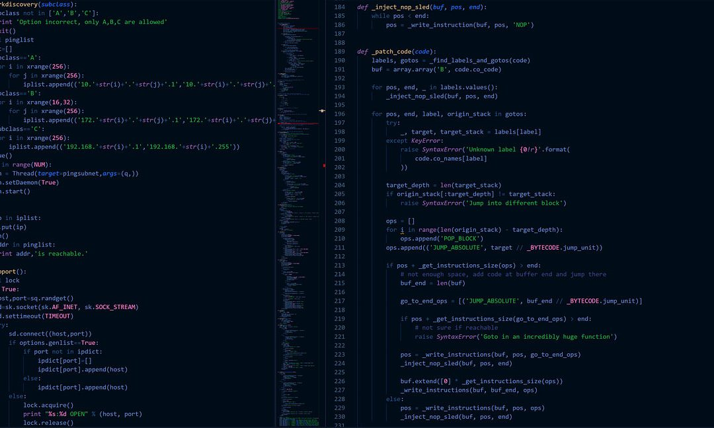

droga IT
Praktyki zawodowe to doskonała okazja, aby zdobyć doświadczenie, poznać środowisko pracy oraz rozwijać umiejętności programistyczne.

O praktykach
Praktyki zawodowe w firmie IT pozwalają uczniowi wykorzystać wiedzę zdobytą w szkole w rzeczywistych sytuacjach.
Podczas praktyk można poznać zasady pracy zespołowej, nauczyć się korzystania z narzędzi programistycznych oraz zdobyć pierwsze doświadczenie zawodowe.


Zadania
- Tworzenie stron internetowych
- Programowanie w HTML, CSS i JavaScript
- Testowanie aplikacji
- Praca z Git i GitHub
- Współpraca w zespole
Cele praktyki
- Zdobycie doświadczenia zawodowego
- Rozwijanie umiejętności programistycznych
- Poznanie pracy w zespole
- Nauka Git i GitHub
- Praca z nowoczesnymi technologiami
Multimedia
Przydatne informacje
Więcej informacji o programowaniu można znaleźć na stronie MDN Web Docs .